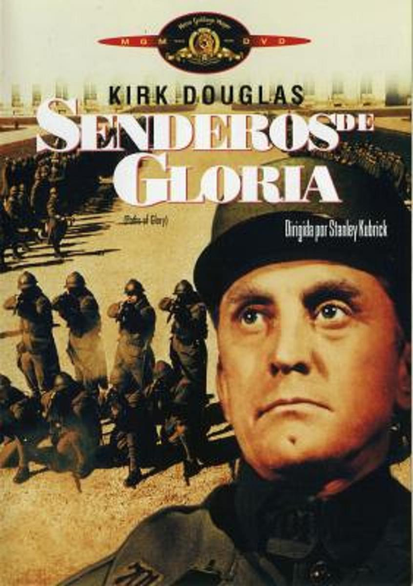

 La historia se desarrolla en el frente francés, en 1916. El ataque suicida del Ejército francés contra las posiciones alemanas en la colina de las hormigas (Ant Hill), un punto estratégico de vital importancia para el desarrollo de la Primera Guerra Mundial, se convierte en un fracaso estrepitoso. Para escarmentar a las tropas con un castigo ejemplar, el general Mireau (George Macready), uno de los principales responsables del ataque y de su estrepitoso fracaso, convoca un consejo de guerra: tres soldados elegidos al azar por sus superiores son acusados falsamente de cobardía ante el enemigo y se enfrentan a la pena de muerte por fusilamiento.